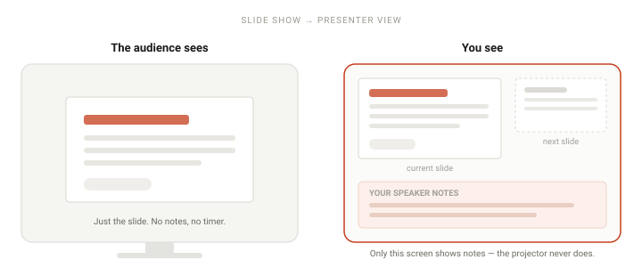

To add speaker notes in PowerPoint: select the slide in the thumbnail pane, click View → Notes to open the notes pane below the slide, then click into it and type. Notes are private — the audience never sees them. To read them while you present, turn on Slide Show → Use Presenter View.
Speaker notes are the single most underused feature in PowerPoint. They are where your actual script goes, so the slide itself can stay short enough for people to read in three seconds. Here is how to add them, and how to actually use them while you are standing in front of a room.
Step by step
-
Select the slide you want to annotate
Click the slide in the thumbnail pane on the left. Notes belong to individual slides, so you are editing one slide's notes at a time — there is no document-wide notes area.
-
Open the Notes pane
Go to View → Notes, or click the Notes button in the status bar at the bottom of the window. A pane labelled "Click to add notes" opens directly beneath the slide.
Nothing happened? Your window is probably too narrow to show the pane. Maximise the PowerPoint window and try again — see the troubleshooting section below.
-
Type your notes
Click into the notes area and type. You can press Enter for a new line and Tab to indent — notes support basic formatting like bold and bullet lists from the Home tab.
Write the way you speak, not the way you write. Full sentences are a trap: if you write prose, you will read it aloud, and reading aloud is the fastest way to lose a room.
-
Format the notes to be glanceable
You will be reading these at arm's length while talking, so optimise for a two-second glance rather than for completeness. Use short lines, bold the words you must not forget (a number, a name, a transition), and leave blank lines between ideas.
A format that works: one line for the point, one line for the example. If a slide needs more than six lines of notes, the slide is probably doing too much.
-
Read them in Presenter View
Notes are useless if you cannot see them while presenting. Go to Slide Show → Use Presenter View and make sure the box is ticked. On Mac the same tab carries a Presenter View button instead. When you start the slideshow on a second screen, your laptop shows the current slide, your notes, and a preview of the next slide, while the projector shows only the slide.
Use the Font size buttons (the A− and A+ icons) in Presenter View to make the notes bigger without touching the slide itself.

Two different screens. The projector only ever gets the slide — your notes stay on your laptop. -
Print or export the notes if you need a paper backup
For a printed copy: File → Print, then change the layout dropdown from Full Page Slides to Notes Pages. Each page prints one slide plus its notes underneath.
For a PDF: File → Export → Create PDF/XPS, and select Notes Pages in the options. If you leave it on Slides, the notes are silently dropped.
When it does not work
Almost every problem with speaker notes comes down to one of these five.
- The Notes pane will not appear First check View → Notes and make sure it is ticked. If it already is, you are probably in Reading View — click View → Normal to get back to the editing view, where the pane is available. A window that is too narrow is the other common cause: maximise it.
- My notes disappeared Press Ctrl+Z (⌘Z on Mac) immediately. Notes live inside the .pptx file rather than in a separate document, so if you typed notes on a copy and later opened the original, you are looking at a different file. Check the title bar for which file is open.
- Notes do not show up in Presenter View Three things to check, in order: Slide Show → Use Presenter View is ticked; you have a second display connected and are looking at the presenter's screen, not the projector; and the slideshow is actually running (F5) rather than sitting in the editing view, where Presenter View does not exist.
- The notes text is too small to read In Presenter View, use the A− / A+ buttons to resize the notes pane. To change the default for every slide, go to View → Notes Master and increase the body text size there — that is the equivalent of the Slide Master, but for notes.
- Printed notes come out blank You are almost certainly still on the default Full Page Slides print layout. Change it to Notes Pages. The same applies to PDF export, where you have to tick Notes Pages in the export options.
Frequently asked questions
- Are speaker notes visible to the audience?
- No. Notes appear only in your Presenter View and in the editing view. During a normal slideshow the audience sees just the slide — the notes are never projected. The one way to leak them is to project your laptop's screen by mistake instead of the second display, so check your display setting before the room fills up.
- Why is the Notes pane not showing in PowerPoint?
- Go to View and tick Notes. If it is already ticked, you are likely in Reading View or the window is too narrow — switch to Normal view and maximise the window.
- Can I add speaker notes in the free PowerPoint web app?
- Yes. Select View → Notes and type in the pane below the slide. The web app does not give you the full Presenter View experience, so on the web the notes are most useful for printing and export rather than for live presenting.
- Do speaker notes appear when I export to PDF?
- Only if you choose Notes Pages during export. A standard slide export leaves them out entirely.
- How do I make the speaker notes text bigger?
- Use the A− / A+ buttons in Presenter View for a quick change, or set a permanent default in View → Notes Master, which applies to every slide's notes at once.
Official references
- Add speaker notes to your slides Microsoft's own steps for the Notes pane and notes pages.
- Present slide shows Presenter View, which is where notes are actually read from.